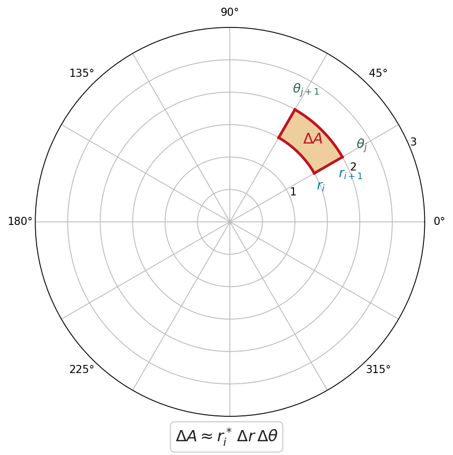

Section 15.3: Double Integrals in Polar Coordinates
MTH 310 — Calculus III | Multiple Integrals
Why Polar?
Not every region fits nicely into Cartesian coordinates. Consider integrating over a disk like \(x^2 + y^2 \leq 4\).
In Cartesian, the bounds are:
\[\int_{-2}^{2} \int_{-\sqrt{4-x^2}}^{\sqrt{4-x^2}} f(x,y) \, dy \, dx\]
That square root makes everything painful — and the region isn't \(x\)-simple or \(y\)-simple in a clean way.
But in polar coordinates, a disk of radius 2 is just \(0 \leq r \leq 2\), \(0 \leq \theta \leq 2\pi\). The bounds are constants!
Polar Rectangles and the Area Element
In Cartesian coordinates, we chop the plane into small rectangles of area \(\Delta A = \Delta x \, \Delta y\).
In polar coordinates, we chop the plane into polar rectangles: regions bounded by two radii and two arcs.

A polar rectangle with \(r\) from \(r_i\) to \(r_i + \Delta r\) and \(\theta\) from \(\theta_j\) to \(\theta_j + \Delta\theta\) has area:
\[\Delta A_i \approx r_i \, \Delta r \, \Delta\theta\]
The key insight: polar rectangles are wider at larger \(r\). The factor of \(r\) accounts for this stretching. A small \(\Delta r \, \Delta\theta\) box near \(r = 10\) covers more area than the same box near \(r = 1\).
The Polar Double Integral
Double Integral in Polar Coordinates
If \(f\) is continuous on a polar region \(R\) described by \(\alpha \leq \theta \leq \beta\) and \(h_1(\theta) \leq r \leq h_2(\theta)\), then:
\[\iint_R f(x,y) \, dA = \int_\alpha^\beta \int_{h_1(\theta)}^{h_2(\theta)} f(r\cos\theta, \, r\sin\theta) \; r \, dr \, d\theta\]
Three things change when converting to polar:
- Replace \(x\) with \(r\cos\theta\) and \(y\) with \(r\sin\theta\)
- Replace \(dA\) with \(r \, dr \, d\theta\) (don't forget the \(r\)!)
- Replace the Cartesian bounds with polar bounds
Quick Check: Convert to Polar
Set up (but do not evaluate) the polar integral for:
\[\iint_R (x^2 + y^2) \, dA\]
where \(R\) is the unit disk \(x^2 + y^2 \leq 1\).
What replaces \(x^2 + y^2\)? What replaces \(dA\)? What are the bounds?
Use \(x^2 + y^2 = r^2\) and \(dA = r\,dr\,d\theta\). The unit disk is \(0 \leq r \leq 1\), \(0 \leq \theta \leq 2\pi\).
\(x^2 + y^2 = r^2\), so the integrand becomes \(r^2\).
\(dA = r \, dr \, d\theta\), so the full integral is:
\[\int_0^{2\pi} \int_0^1 r^2 \cdot r \, dr \, d\theta = \int_0^{2\pi} \int_0^1 r^3 \, dr \, d\theta\]
Example 1: Area of \(r = 4\cos\theta\) in QI
Example 1
Find the area in Quadrant I enclosed by the graph of \(r = 4\cos\theta\).
First, what does \(r = 4\cos\theta\) look like? Multiply both sides by \(r\): \(r^2 = 4r\cos\theta\), so \(x^2 + y^2 = 4x\), which gives \((x-2)^2 + y^2 = 4\). It's a circle of radius 2 centered at \((2, 0)\).
Area = \(\iint_R 1 \, dA\) in polar. The curve starts at \(\theta = 0\) (where \(r = 4\)) and returns to the origin at \(\theta = \pi/2\) (where \(r = 0\)). Inner bounds: \(0 \leq r \leq 4\cos\theta\).
Write the area formula:
\[A = \int_\alpha^\beta \int_0^{h(\theta)} r \, dr \, d\theta\]
Substitute the bounds \(\theta = 0\) to \(\theta = \pi/2\) and \(r = 0\) to \(r = 4\cos\theta\):
\[A = \int_0^{\pi/2} \int_0^{4\cos\theta} r \, dr \, d\theta\]
Evaluate the inner integral:
\[A = \int_0^{\pi/2} \left[\frac{r^2}{2}\right]_0^{4\cos\theta} d\theta = \int_0^{\pi/2} \frac{16\cos^2\theta}{2} \, d\theta = \int_0^{\pi/2} 8\cos^2\theta \, d\theta\]
Use the half-angle identity \(\cos^2\theta = \frac{1 + \cos 2\theta}{2}\):
\[A = \int_0^{\pi/2} 4(1 + \cos 2\theta) \, d\theta = \left[4\theta + 2\sin 2\theta\right]_0^{\pi/2} = 4 \cdot \frac{\pi}{2} + 0 = 2\pi\]
Example 2: Volume of a Hemisphere
Example 2
Evaluate \(\displaystyle\iint_R \sqrt{4 - x^2 - y^2} \, dA\) where \(R = \{(x,y) \mid x^2 + y^2 \leq 4, \; x \geq 0\}\).
The integrand \(z = \sqrt{4 - x^2 - y^2}\) is the top half of the sphere \(x^2 + y^2 + z^2 = 4\) (radius 2). The region \(R\) is a semicircle (right half of the disk of radius 2).
Convert to polar: \(\sqrt{4 - x^2 - y^2} = \sqrt{4 - r^2}\). The semicircle where \(x \geq 0\) has \(-\pi/2 \leq \theta \leq \pi/2\) and \(0 \leq r \leq 2\).
Write the conversion:
\[f = \sqrt{4 - r^2}, \quad dA = r \, dr \, d\theta\]
Polar bounds: \(-\frac{\pi}{2} \leq \theta \leq \frac{\pi}{2}\), \(\quad 0 \leq r \leq 2\).
Set up the integral:
\[\int_{-\pi/2}^{\pi/2} \int_0^2 \sqrt{4 - r^2} \; r \, dr \, d\theta\]
Inner integral (use \(u = 4 - r^2\), \(du = -2r\,dr\)):
\[\int_0^2 r\sqrt{4 - r^2} \, dr = \left[-\frac{1}{3}(4 - r^2)^{3/2}\right]_0^2 = 0 - \left(-\frac{8}{3}\right) = \frac{8}{3}\]
Outer integral:
\[\int_{-\pi/2}^{\pi/2} \frac{8}{3} \, d\theta = \frac{8}{3} \cdot \pi = \frac{8\pi}{3}\]
Quick Check: Sketch a Polar Region
Sketch the region described by \(1 \leq r \leq 2\) and \(0 \leq \theta \leq \pi/4\). What shape is it?
Mark the radii \(r = 1\) and \(r = 2\) and the angles \(\theta = 0\) and \(\theta = \pi/4\). Shade the region between them.
It's a polar rectangle (annular sector) — the region between two concentric circles, cut by two radial lines. It looks like a thick slice of a ring.
If we wanted to integrate \(f(x,y)\) over this region:
\[\int_0^{\pi/4} \int_1^2 f(r\cos\theta, \, r\sin\theta) \; r \, dr \, d\theta\]
Example 3: Area of the Lima\c{c}on \(r = 4 + 3\cos\theta\)
Example 3
Find the area enclosed by \(r = 4 + 3\cos\theta\).
Since \(4 > 3\), this is a lima\c{c}on without an inner loop — it's a slightly flattened, egg-shaped curve. The curve is traced once as \(\theta\) goes from \(0\) to \(2\pi\).
Area = \(\int_0^{2\pi} \int_0^{4 + 3\cos\theta} r \, dr \, d\theta\). Evaluate the inner integral first, then use the identity \(\cos^2\theta = \frac{1 + \cos 2\theta}{2}\).
Write the area integral:
\[A = \int_0^{2\pi} \int_0^{4+3\cos\theta} r \, dr \, d\theta\]
Evaluate the inner integral:
\[A = \int_0^{2\pi} \frac{(4 + 3\cos\theta)^2}{2} \, d\theta = \frac{1}{2}\int_0^{2\pi} (16 + 24\cos\theta + 9\cos^2\theta) \, d\theta\]
Integrate each term:
\[\frac{1}{2}\left[16\theta + 24\sin\theta + 9 \cdot \frac{\theta + \frac{1}{2}\sin 2\theta}{1}\right]_0^{2\pi}\]
Over a full period: \(\int_0^{2\pi} \cos\theta \, d\theta = 0\) and \(\int_0^{2\pi} \cos^2\theta \, d\theta = \pi\).
Simplify:
\[A = \frac{1}{2}\left(16 \cdot 2\pi + 0 + 9\pi\right) = \frac{1}{2}(32\pi + 9\pi) = \frac{41\pi}{2}\]
Example 4: Volume Inside a Sphere and Outside a Cylinder
Example 4
Find the volume of the solid inside the sphere \(x^2 + y^2 + z^2 = 16\) and outside the cylinder \(x^2 + y^2 = 4\).
Visualize: The sphere has radius 4. The cylinder has radius 2. We want the volume of the sphere with a cylindrical hole of radius 2 drilled through the center.
Set up: By symmetry, compute the volume above the \(xy\)-plane and double it.
Above the \(xy\)-plane, \(z = \sqrt{16 - x^2 - y^2} = \sqrt{16 - r^2}\).
The region in the \(xy\)-plane: outside the cylinder means \(r \geq 2\); inside the sphere means \(r \leq 4\).
Use \(V = 2\int_0^{2\pi}\int_2^4 \sqrt{16 - r^2} \; r \, dr \, d\theta\). The inner integral uses \(u = 16 - r^2\).
Write the integral:
\[V = 2\int_0^{2\pi} \int_2^4 \sqrt{16 - r^2} \; r \, dr \, d\theta\]
Inner integral (use \(u = 16 - r^2\), \(du = -2r\,dr\)):
When \(r = 2\): \(u = 12\). When \(r = 4\): \(u = 0\).
\[\int_2^4 r\sqrt{16 - r^2} \, dr = \left[-\frac{1}{3}(16 - r^2)^{3/2}\right]_2^4 = -\frac{1}{3}(0) + \frac{1}{3}(12)^{3/2} = \frac{12\sqrt{12}}{3} = \frac{24\sqrt{3}}{3} = 8\sqrt{3}\]
Outer integral:
\[V = 2 \int_0^{2\pi} 8\sqrt{3} \, d\theta = 2 \cdot 8\sqrt{3} \cdot 2\pi = 32\sqrt{3}\,\pi\]
When to Use Polar Coordinates
How do you know when to switch to polar? Here are the telltale signs:
| Clue | Example |
|---|---|
| Region is a disk, annulus, or sector | \(x^2 + y^2 \leq 9\) |
| Boundary involves \(x^2 + y^2\) | \(1 \leq x^2 + y^2 \leq 4\) |
| Integrand contains \(x^2 + y^2\) | \(e^{-(x^2+y^2)}\) |
| Boundary is a polar curve | \(r = 1 + \cos\theta\) |
| Square-root bounds like \(\sqrt{a^2 - x^2}\) | Semicircle or quarter-circle region |
Conversion checklist:
- Replace \(x = r\cos\theta\), \(y = r\sin\theta\), \(x^2 + y^2 = r^2\)
- Replace \(dA = dy\,dx\) with \(r\,dr\,d\theta\) (don't forget the \(r\)!)
- Determine polar bounds for \(r\) and \(\theta\)
- Evaluate (inner \(r\) first, then outer \(\theta\))
Section 15.3 Summary
Area Element
\(dA = r \, dr \, d\theta\) — the extra \(r\) accounts for polar rectangles being wider at larger radii.
The Formula
\(\displaystyle\iint_R f(x,y)\,dA = \int_\alpha^\beta \int_{h_1(\theta)}^{h_2(\theta)} f(r\cos\theta, r\sin\theta)\;r\,dr\,d\theta\)
Key Substitutions
\(x = r\cos\theta\), \(y = r\sin\theta\), \(x^2+y^2 = r^2\)
When to Use Polar
Circular regions, \(x^2+y^2\) in bounds or integrand, polar curves
Common Mistake
Forgetting the \(r\) in \(r\,dr\,d\theta\). Write it every time!